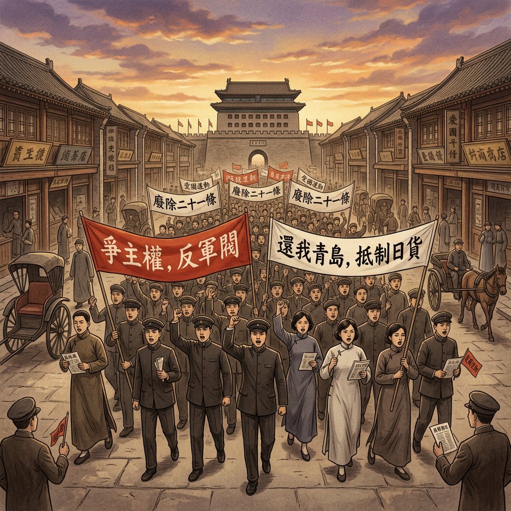

五四运动
从巴黎和会到觉醒年代 · 初中历史八年级

从巴黎和会到觉醒年代 · 初中历史八年级
第一次世界大战结束，战胜国在法国巴黎召开和平会议。中国作为战胜国之一，派代表参加，满怀希望地提出收回德国在山东的权益。
然而，会议结果却让所有中国人震惊——中国代表提出收回德国在山东的权益，却被英、法、美等国拒绝，山东权益被转让给日本！

让我们分析一下巴黎和会中国外交失败的三个主要原因：
一战结束后，英、法、美等国重新瓜分世界的野心没有改变，它们需要日本在亚太地区牵制苏俄和中国。
北洋政府代表对列强抱有幻想，缺乏斗争勇气，在国际上没有话语权，成为列强的傀儡。
经过清朝末年的衰落和民国初年的军阀混战，中国国力衰败，在国际事务中毫无地位。
弱国无外交——国家实力是外交的基础。只有国家强大，才能在国际上获得尊重和公平对待。
北京大学等13所高校的3000多名学生，在天安门前集会，高呼"外争主权，内除国贼"、"还我青岛"等口号，随后举行示威游行。
学生的爱国行动很快得到社会各界支持。6月以后，运动重心转移到上海，工人阶级成为运动主力，五四运动进入新的阶段。
五四运动是一次彻底的反帝反封建的爱国运动，标志着中国新民主主义革命的开端。
五四精神的核心是爱国主义，青年学生和工人阶级用行动保卫国家主权。
追求民主制度和科学精神，反对封建愚昧和专制统治。
勇于探索、追求真理的精神，为中国共产党的成立准备了思想基础。
百年后的今天，我们纪念五四运动，就是要传承五四精神。作为新时代的青年，我们要：